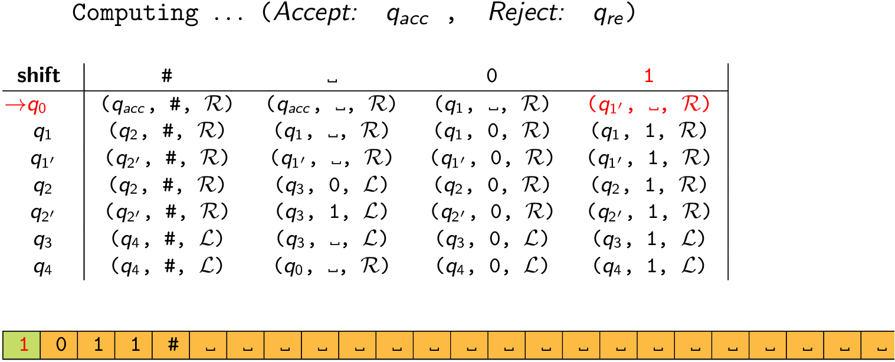
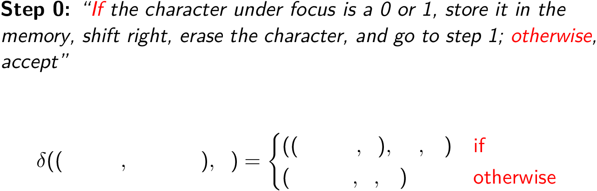

Turing machine example: Shifting
3 April, 2020

Although the tape serves as an unlimited memory for the computation, it is often used to focus on one part of the tape and then move to another part to use it (either to compare, as in equality, or to print it). While moving to the other part of the tape, one needs to remember what was seen and that information can only be " by the states themselves ". We will now see what that means. This time, let us separate whatever we need to remember from the steps and use more organized notation to help us keep track of all of this.
We will now look at states in a more organized way by thinking of them as a combination of the steps and a finite memory. This is only to assist in designing the Turing machine, i.e. coming up with the transition table. We can use it for all the previous examples too and the final transition table will be just as before, bearing no evidence of how we figured it out.
Example: Shift a string to a position marked after the symbol #.
Let us summarize the algorithm. We can shift a string by repeating this sequence of steps: “remember” the character under the head, sweep right until we find the # symbol, then find the first blank character, and print the remembered character there, and then sweep back, first searching for the # and then for the blank character and then move right.
The steps
The distinct steps are as follows:
Step 0: If the character under the head is 0 or 1, erase it and store it in the memory; otherwise, accept and halt.
Step 1: Search for the # toward the right
Step 2: Now search for the first blank character and print the character stored in memory
Step 3: Search for the # toward the left
Step 4: Now search for the first blank character, shift to the right and go to Step 0.
Denote these set of steps by \[S := \{\text{Step 0, Step 1, Step 2, Step 3, Step 4}\}\].
The “memory”
It is necessary to remember the character while searching for the appropriate position of the tape to print it. So it is stored in a memory during the search. As we shall see, this memory can be viewed as a component of the state, and is therefore different from the tape: the tape is unlimited, whereas, the size of this memory is fixed in the machine and is usually very small. In our example, the steps above need to store at most one character at a time, and that too only 0, or 1. Of course, you may need to remember nothing. So the “memory” can have three possibilites, 0, 1, or Nothing. Denote the possible states of the memory by \[M :=\{ 0, 1, \text{Nothing} \}\].
The states
We will see how we can view the current state as the current step and the current memory. Therefore, we can think of it as a pair coming from \(S \times M\). So,
\[Q \subset S \times M\]
Decoding the steps
This gif animation shows the literal translation of a step into a part of the definition of a transition function.

(The symbol \(\sqcup\) is commonly used to denote a blank symbol explicitly.)
Each step describes possible changes to the memory, the character under the head, and the next step and the direction to shift the head to. We will literally describe these changes by defining the part of \(\delta\) that takes as input the current step, memory, and character under the head, and outputs their future versions as well as the direction. We will use notation that makes the translation from step to part of \(\delta\) very apparent.
We will then hide the way we think of the states by assigning the distinct pairs (of step and memory) distinct labels, and express \(\delta\) in terms of these. For the implementation, this is all that is needed; viewing states as pairs was only to assist us in translating the algorithm to a transition table.
Finally, we will collect all the parts of the definition of \(\delta\) that use \(q_i\)’s rather than pairs, and use it to define the transition table.
Step 0 is described by
\[\delta((\text{Step 0},\text{Nothing}),x) = \begin{cases} ((\text{Step 1}, x),\sqcup ,\mathrm{R}) & \text{if } x \text{= 0,1}\\ (Accept,x, \mathrm{R}) & \text{otherwise}\\ \end{cases}\]
“If the character under focus is a 0 or 1, store it in the memory, shift right, and go to step 2; otherwise, accept”
We now hide the way we think of the states by denoting \[q_0:=(\text{Step 0}, \text{Nothing})\] \[q_1:=(\text{Step 1}, 0)\] \[q_1':=(\text{Step 1},1)\] and expressing the above as,
\[\delta(q_0, x) = \begin{cases} (q_1,\sqcup , \mathrm{R}) & \text{if } x \text{= 0}\\ (q_1',\sqcup , \mathrm{R}) & \text{if } x \text{= 1}\\ (Accept,x, \mathrm{R}) & \text{otherwise}\\ \end{cases} \]
Step 1 is described by,
\[\delta((\text{Step 1}, n), x) = \begin{cases} ((\text{Step 2}, n) ,x, \mathrm{R}) & \text{if } x \text{=} \#\\ ((\text{Step 1}, n),x, \mathrm{R}) & \text{otherwise} \end{cases} \]
“if the character under focus is a #, then move right and go to Step 2; otherwise, repeat this step.”
Here, \(n=0\) or 1, so if we denote \[q_2=(\text{Step 2},0)\] \[q_2'=(\text{Step 2},1)\] then we can rewrite the above as
\[\delta(q_1, x) = \begin{cases} (q_2 ,x, \mathrm{R}) & \text{if } x \text{=} \#\\ (q_1,x, \mathrm{R}) & \text{otherwise}\\ \end{cases} \]
and
\[\delta(q_1', x) = \begin{cases} (q_2' ,x, \mathrm{R}) & \text{if } x \text{=} \#\\ (q_1',x, \mathrm{R}) & \text{otherwise}\\ \end{cases} \]
Step 2 is described by,
\[\delta((\text{Step 2},n), x) = \begin{cases} ((\text{Step 3},\text{Nothing}),n, \mathrm{R}) & \text{if } x \text{=} \sqcup\\ ((\text{Step 2},n),x, \mathrm{R}) & \text{otherwise}\\ \end{cases} \]
“If the character under focus is blank, erase the memory, move right, and go to Step 3; otherwise, move right.”
Denoting \[q_3:=(\text{Step 3},\text{Nothing})\] we get
\[\delta(q_2, x) = \begin{cases} (q_3,0, \mathrm{R}) & \text{if } x \text{=} \sqcup\\ (q_2,x, \mathrm{R}) & \text{otherwise}\\ \end{cases} \]
and
\[\delta(q_2', x) = \begin{cases} (q_3,1, \mathrm{R}) & \text{if } x \text{=} \sqcup \\ (q_2',x, \mathrm{R}) & \text{otherwise}\\ \end{cases} \]
Step 3 is described by
\[\delta((\text{Step 3},\text{Nothing}), x) = \begin{cases} ((\text{Step 4},\text{Nothing}),x, \mathrm{L}) & \text{if } x \text{=} \#\\ ((\text{Step 3},\text{Nothing}),x, \mathrm{L}) & \text{otherwise}\\ \end{cases} \]
“If the character under focus is #, then move left and go to Step 4; otherwise, move left and repeat this step.”
Denote, \[q_3=(\text{Step 3},\text{Nothing})\] \[q_4=(\text{Step 4},\text{Nothing})\] to get
\[\delta(q_3, x) = \begin{cases} (q_4 ,x, \mathrm{L}) & \text{if } x \text{=} \#\\ (q_3,x, \mathrm{L}) & \text{otherwise}\\ \end{cases} \]
Step 4 is described by
\[\delta((\text{Step 4},\text{Nothing}), x) = \begin{cases} ((\text{Step 0}, \text{Nothing}),x, \mathrm{R}) & \text{if } x \text{=} \sqcup \\ ((\text{Step 4},\text{Nothing}),x, \mathrm{L}) & \text{otherwise}\\ \end{cases} \]
which, using the \(q_i\)’s already defined, is
\[\delta(q_4, x) = \begin{cases} (q_0 ,x, \mathrm{R}) & \text{if } x \text{=} \sqcup \\ (q_4,x, \mathrm{L}) & \text{otherwise}\\ \end{cases} \]
The transition table
Now it is very straightforward to translate all the partial definitions of \(\delta\) above that use \(q_i\)’s rather than the explicit tuples, into a transition table.
| 0 | 1 | \(\sqcup\) | # | |
|---|---|---|---|---|
| \(q_0\) | (\(q_1\), \(\sqcup\), R) | (\(q_1'\), \(\sqcup\), R) | (Accept, \(\sqcup\), R) | (Accept, #, R) |
| \(q_1\) | (\(q_1\), 0, R) | (\(q_1\), 1, R) | (\(q_1\), \(\sqcup\), R) | (\(q_2\), #, R) |
| \(q_1'\) | (\(q_1'\), 0, R) | (\(q_1'\), 1, R) | (\(q_1'\), \(\sqcup\), R) | (\(q_2'\), #, R) |
| \(q_2\) | (\(q_2\), 0, R) | (\(q_2\), 1, R) | (\(q_3\), 0, L) | (\(q_2\), #, R) |
| \(q_2'\) | (\(q_2'\), 0, R) | (\(q_2'\), 1, R) | (\(q_3\), 1, L) | (\(q_2'\), #, R) |
| \(q_3\) | (\(q_3\), 0, L) | (\(q_3\), 1, L) | (\(q_3\), \(\sqcup\), L) | (\(q_4\), #, L) |
| \(q_4\) | (\(q_4\), 0, L) | (\(q_4\), 1, L) | (\(q_0\), \(\sqcup\), R) | (\(q_4\), #, L) |
An example input
input: 1011#
: |1| 0 1 1 # ... \(\delta:\)(\(q_0\), 1) \(\to\) (\(q_1'\), \(\sqcup\), R)
: ␣ |0| 1 1 # ... \(\delta:\)(\(q_1'\), 0) \(\to\) (\(q_1'\), 0, R)
: ␣ 0 |1| 1 # ... \(\delta:\)(\(q_1'\), 1) \(\to\) (\(q_1'\), 1, R)
: ␣ 0 1 |1| # ... \(\delta:\)(\(q_1'\), 1) \(\to\) (\(q_1'\), 1, R)
: ␣ 0 1 1 |#|... \(\delta:\)(\(q_1'\), #) \(\to\) (\(q_2'\), #, R)
: ␣ 0 1 1 # |␣|... \(\delta:\)(\(q_2'\), \(\sqcup\)) \(\to\) (\(q_3\), 1, L)
: ␣ 0 1 1 |#| 1 ... \(\delta:\)(\(q_3\), #) \(\to\) (\(q_4\), #, L)
: ␣ 0 1 |1| # 1 ... \(\delta:\)(\(q_4\), 1) \(\to\) (\(q_4\), 1, L)
: ␣ 0 |1| 1 # 1 ... \(\delta:\)(\(q_4\), 1) \(\to\) (\(q_4\), 1, L)
: ␣ |0| 1 1 # 1 ... \(\delta:\)(\(q_4\), 0) \(\to\) (\(q_4\), 0, L)
: |␣| 0 1 1 # 1 ... \(\delta:\)(\(q_4\), \(\sqcup\)) \(\to\) (\(q_0\), \(\sqcup\), R)
: ␣ |0| 1 1 # 1 ... \(\delta:\)(\(q_0\), 0) \(\to\) (\(q_1\), \(\sqcup\), R)
: ␣ ␣ |1| 1 # 1 ... \(\delta:\)(\(q_1\), 1) \(\to\) (\(q_1\), 1, R)
: ␣ ␣ 1 |1| # 1 ... \(\delta:\)(\(q_1\), 1) \(\to\) (\(q_1\), 1, R)
: ␣ ␣ 1 1 |#| 1 ... \(\delta:\)(\(q_1\), #) \(\to\) (\(q_2\), #, R)
: ␣ ␣ 1 1 # |1|... \(\delta:\)(\(q_2\), 1) \(\to\) (\(q_2\), 1, R)
: ␣ ␣ 1 1 # 1 |␣|... \(\delta:\)(\(q_2\), \(\sqcup\)) \(\to\) (\(q_3\), 0, L)
: ␣ ␣ 1 1 # |1| 0 ... \(\delta:\)(\(q_3\), 1) \(\to\) (\(q_3\), 1, L)
: ␣ ␣ 1 1 |#| 1 0 ... \(\delta:\)(\(q_3\), #) \(\to\) (\(q_4\), #, L)
: ␣ ␣ 1 |1| # 1 0 ... \(\delta:\)(\(q_4\), 1) \(\to\) (\(q_4\), 1, L)
: ␣ ␣ |1| 1 # 1 0 ... \(\delta:\)(\(q_4\), 1) \(\to\) (\(q_4\), 1, L)
: ␣ |␣| 1 1 # 1 0 ... \(\delta:\)(\(q_4\), \(\sqcup\)) \(\to\) (\(q_0\), \(\sqcup\), R)
: ␣ ␣ |1| 1 # 1 0 ... \(\delta:\)(\(q_0\), 1) \(\to\) (\(q_1'\), \(\sqcup\), R)
: ␣ ␣ ␣ |1| # 1 0 ... \(\delta:\)(\(q_1'\), 1) \(\to\) (\(q_1'\), 1, R)
: ␣ ␣ ␣ 1 |#| 1 0 ... \(\delta:\)(\(q_1'\), #) \(\to\) (\(q_2'\), #, R)
: ␣ ␣ ␣ 1 # |1| 0 ... \(\delta:\)(\(q_2'\), 1) \(\to\) (\(q_2'\), 1, R)
: ␣ ␣ ␣ 1 # 1 |0|... \(\delta:\)(\(q_2'\), 0) \(\to\) (\(q_2'\), 0, R)
: ␣ ␣ ␣ 1 # 1 0 |␣|... \(\delta:\)(\(q_2'\), \(\sqcup\)) \(\to\) (\(q_3\), 1, L)
: ␣ ␣ ␣ 1 # 1 |0| 1 ... \(\delta:\)(\(q_3\), 0) \(\to\) (\(q_3\), 0, L)
: ␣ ␣ ␣ 1 # |1| 0 1 ... \(\delta:\)(\(q_3\), 1) \(\to\) (\(q_3\), 1, L)
: ␣ ␣ ␣ 1 |#| 1 0 1 ... \(\delta:\)(\(q_3\), #) \(\to\) (\(q_4\), #, L)
: ␣ ␣ ␣ |1| # 1 0 1 ... \(\delta:\)(\(q_4\), 1) \(\to\) (\(q_4\), 1, L)
: ␣ ␣ |␣| 1 # 1 0 1 ... \(\delta:\)(\(q_4\), \(\sqcup\)) \(\to\) (\(q_0\), \(\sqcup\), R)
: ␣ ␣ ␣ |1| # 1 0 1 ... \(\delta:\)(\(q_0\), 1) \(\to\) (\(q_1'\), \(\sqcup\), R)
: ␣ ␣ ␣ ␣ |#| 1 0 1 ... \(\delta:\)(\(q_1'\), #) \(\to\) (\(q_2'\), #, R)
: ␣ ␣ ␣ ␣ # |1| 0 1 ... \(\delta:\)(\(q_2'\), 1) \(\to\) (\(q_2'\), 1, R)
: ␣ ␣ ␣ ␣ # 1 |0| 1 ... \(\delta:\)(\(q_2'\), 0) \(\to\) (\(q_2'\), 0, R)
: ␣ ␣ ␣ ␣ # 1 0 |1|... \(\delta:\)(\(q_2'\), 1) \(\to\) (\(q_2'\), 1, R)
: ␣ ␣ ␣ ␣ # 1 0 1 |␣|... \(\delta:\)(\(q_2'\), \(\sqcup\)) \(\to\) (\(q_3\), 1, L)
: ␣ ␣ ␣ ␣ # 1 0 |1| 1 ... \(\delta:\)(\(q_3\), 1) \(\to\) (\(q_3\), 1, L)
: ␣ ␣ ␣ ␣ # 1 |0| 1 1 ... \(\delta:\)(\(q_3\), 0) \(\to\) (\(q_3\), 0, L)
: ␣ ␣ ␣ ␣ # |1| 0 1 1 ... \(\delta:\)(\(q_3\), 1) \(\to\) (\(q_3\), 1, L)
: ␣ ␣ ␣ ␣ |#| 1 0 1 1 ... \(\delta:\)(\(q_3\), #) \(\to\) (\(q_4\), #, L)
: ␣ ␣ ␣ |␣| # 1 0 1 1 ... \(\delta:\)(\(q_4\), \(\sqcup\)) \(\to\) (\(q_0\), \(\sqcup\), R)
: ␣ ␣ ␣ ␣ |#| 1 0 1 1 ... \(\delta:\)(\(q_0\), #) \(\to\) (Accept, #, R)
: ␣ ␣ ␣ ␣ # |1| 0 1 1 ... Accept